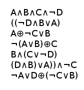
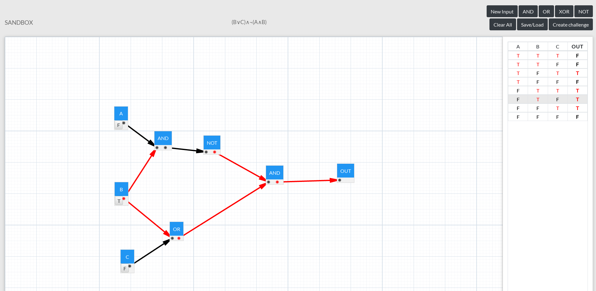
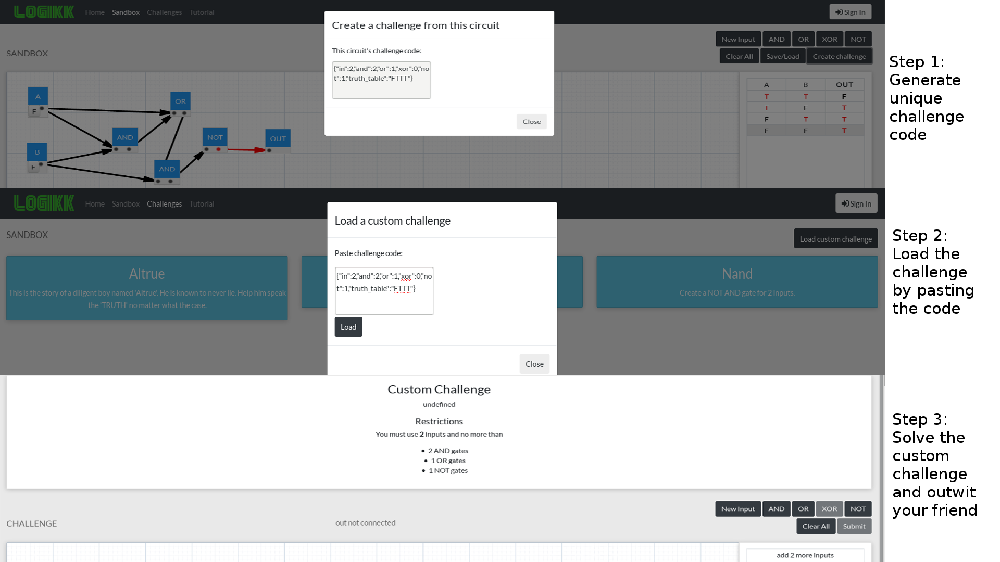

What's the use of a Logic Gate?
How do Logic Gates work?

What is a Truth Table?

What is a Boolean Expression?

What are inputs and outputs?

What is the sandbox?

What are the challenges?

How do I create a challenge?

Finally, what makes our website so great